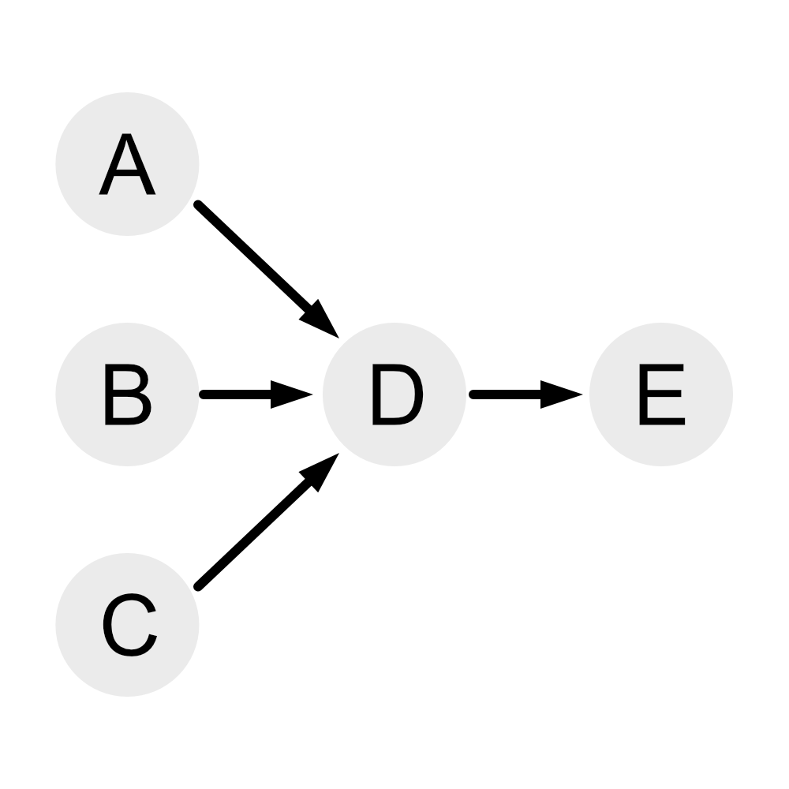

进程的状态
三态图：（三态模型）
新建和结束不包含在三态模型中
备注：
运行状态：进程所需的所有的资源都已经准备就绪，正在被CPU执行
就绪状态：其他所有资源已经准备好，等待CPU执行
等待（阻塞）状态：等待用户指令或者等待I/O设备做出反应等
等待状态又叫做阻塞状态
在三态图（三态模型）的基础上又可以人为增加挂起状态（静止就绪状态和静止阻塞状态
原本的就绪状态和阻塞状态可以变为活跃就绪和活跃等待（阻塞）
由此可以得到下图
五态图（五态模型）：

前趋图
前趋图用来表示一系列活动的前后关系
例如下图：

通过上图可以表现出那些任务可以并行，哪些需要有先后顺序
例如在上图中可以得到如果要完成E需要先完成D，而完成D又需要同时完成A、B、C
进程的同步与互斥
-
互斥
在同一时刻只运行一个进程去使用这一个资源，一个资源无法被多个进程去使用例如千军万马过独木桥就是互斥
-
同步
速度有差异，在一定情况下需要停下等待例如跑步比赛，先到的人需要停下等待后者到达
PV操作
临界资源：进程之间需要以互斥方式对其进行共享的资源，例如打印机、磁带机等
临界区：每个进程中访问临界资源的那段代码成为临界区
信号量：一种特殊的变量
P操作：等待（Wait）操作
V操作：指示（signal）操作
- P操作
- S=S-1
- 如果S
<0，则阻塞 - 如果S
≥0，则继续执行当前指令
- S操作
- S=S+1
- 如果S
≤0，则阻塞 - 如果S
>0，则继续执行当前指令
单缓冲区生产者-消费者问题：
s1=1,s2=0;
生产者:
生产一个产品;
P(s1);
送产品到缓冲区;
V(s2);
消费者:
P(s2);
从缓冲区拿产品;
V(s1);
消费产品;
上述说明：
如果执行生产者：
P(s1) 将s1-1=0
V(s2) 将s2+1=1
此时如果再执行生产者操作，那么将s1-1=-1时候会阻塞生产者进程
如果执行消费者：
P(s2) 将s2-1=-1会阻塞消费者进程
注意下面的是另一题了
例：某书店有一个收银员，概述点最多允许n个购书者进入，将收银员和购书者看作不同的进程，其工作流程如下图所示。利用PV操作实现该过程，设置信号量S1、S2和Sn，初值分别为0，0，n，则图中a1和a2应该填入___，图中b1和b2应该填入___。
解：（这题答案不唯一，第二种答案以【】形式标记）
购买时需要告诉收银员开始收银，因此a1应该是V(S1)【V(S2)】
在收银进程中需要等待需要收银，因此b1应该是P(S1)【P(S2)】
在收银结束后需要返回购买完成，因此b2应该是V(S2)【V(S1)】
在购买者的进程中等待收银完成，因此a2应该是P(S2)【P(S1)】
PV操作和前趋图
例如在先前的前趋图中
可以使用PV操作来表示
A->D:Sa
B->D:Sb
C->D:Sc
D->E:Sd
可以得到PV操作如下：
进程A:
V(Sa);
进程B:
V(Sb);
进程C
V(Sc);
进程D:
P(Sa);
P(Sb);
P(Sc);
V(Sd);
进程E:
P(Sd);
注意下面的是另一题了
进程P1、P2、P3、P4、P5的前趋图如下图所示，若用PV操作控制进程并发执行过程，则需要设置4个信号量S1、S2、S3和S4，且信号量的初值都为0，图中a和b应分别填写___，c和d应填写___，e和f应填写___。
解：
P1执行之后要执行V(signal)操作，即a为V(S1)
P2执行之后要执行V(signal)操作，即b为V(S2)
P3执行的条件是P1和P2都执行完成，即c为P(S1),P(S2)
P3执行之后要执行V(signal)操作，即d为V(S3),V(S4)
P4执行的条件是S3，即e为P(S3)
P5执行的条件是S4，即f为P(S4)
死锁问题
死锁就是系统中有一些资源和进程，但是系统发现所有进程都无法分分配到资源
死锁的四大条件
- 互斥条件
- 保持和等待
- 不剥夺
- 环路等待
打破死锁的方法
- 死锁的预防
- 打破四大条件
- 死锁的避免
- 有序资源分配法
- 银行家算法
银行家算法
例：假设系统中有三类互斥资源R1、R2、R3，可用资源数分别为9、8、5，在T0时刻系统中有P1、P2、P3、P4和P5五个进程，这些进程对资源的最大需求量和已分配资源数如下图，安全序列为___
| 进程 | 最大需求量 | 已分配资源数 | 所需要资源数 | ||||||||
| R1 | R2 | R3 | R1 | R2 | R3 | R1 | R2 | R3 | |||
| P1 | 6 | 5 | 2 | 1 | 2 | 1 | 5 | 3 | 1 | ||
| P2 | 2 | 2 | 1 | 2 | 1 | 1 | 0 | 1 | 0 | ||
| P3 | 8 | 1 | 1 | 2 | 1 | 0 | 6 | 0 | 1 | ||
| P4 | 1 | 2 | 1 | 1 | 2 | 0 | 0 | 0 | 1 | ||
| P5 | 3 | 4 | 4 | 1 | 1 | 3 | 2 | 3 | 1 | ||
解：目前可得系统可用资源是（2，1，0）
那么从所需要的资源数来看只有P2可以执行
经过执行P2，系统可用（4，2，1），之后只有P4可以执行
经过执行P4，系统可用（5，4，1），之后P5和P1都可以执行
……（剩下略）